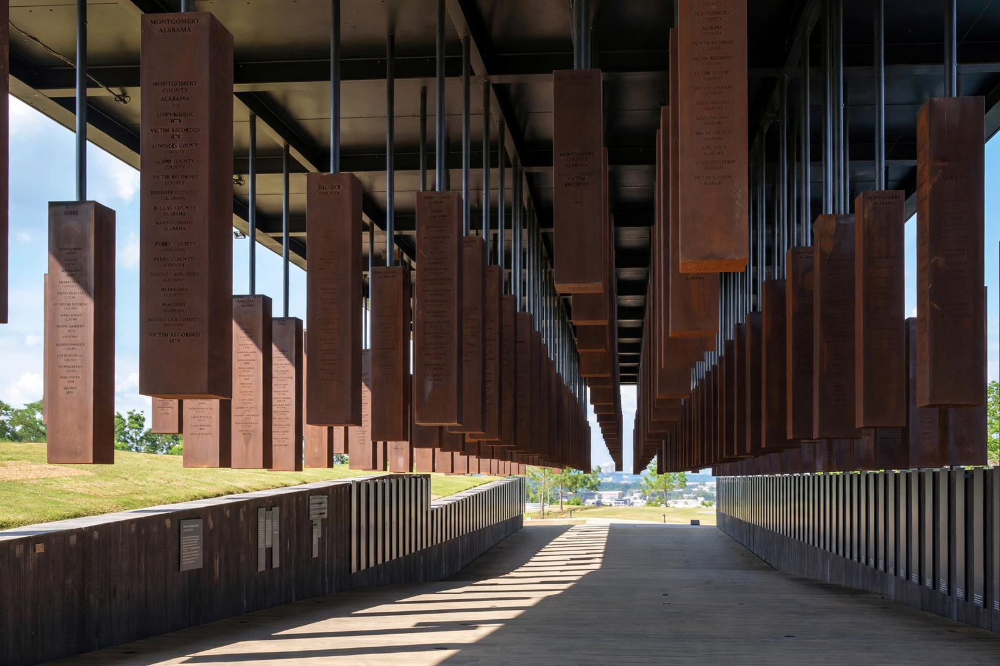

Lynching in the United States
| Period | Peak 1880s–1930s |
|---|---|
| Recorded victims | 4,743 (1882–1968, Tuskegee Institute figures), about 73% Black |
| Region | Throughout the U.S., concentrated in the South |
| Federal law | Emmett Till Antilynching Act, 2022 |

Lynching in the United States was the widespread practice of extrajudicial killing, usually by a mob, that reached its peak from the 1880s into the 1930s. Although victims included whites, Mexicans, Native Americans, Chinese, and others, the great majority of those lynched — roughly three-quarters of the more than 4,700 victims recorded between 1882 and 1968 — were African Americans, and most lynchings took place in the Southern states. Lynching functioned as a tool of racial terror enforcing white supremacy after the collapse of the Reconstruction era.
Characteristics
Lynchings were often public spectacles announced in advance in newspapers, attended by crowds of hundreds or thousands, photographed, and commemorated with souvenir postcards. Victims were typically accused of crimes — most notoriously of sexual offences against white women — but also of minor breaches of racial etiquette, labour organizing, or economic competition. Many were tortured or burned. Local authorities rarely intervened, and convictions of lynchers were exceedingly rare.
Anti-lynching movement
Journalist Ida B. Wells exposed lynching's myths in the 1890s, and the NAACP campaigned for decades for federal legislation. The Dyer Anti-Lynching Bill passed the House in 1922 but was blocked in the Senate by Southern filibusters; some two hundred bills failed over the decades. The threat of lynching helped drive the Great Migration of Black Southerners to Northern cities. Federal prosecutions remained ineffective until the civil rights era, and lynching was only made a federal hate crime by the Emmett Till Antilynching Act of 2022.
Memorialization
The Equal Justice Initiative has documented more than 4,400 racial terror lynchings in twelve Southern states between 1877 and 1950, and in 2018 opened the National Memorial for Peace and Justice in Montgomery, Alabama, the first national memorial to lynching victims.